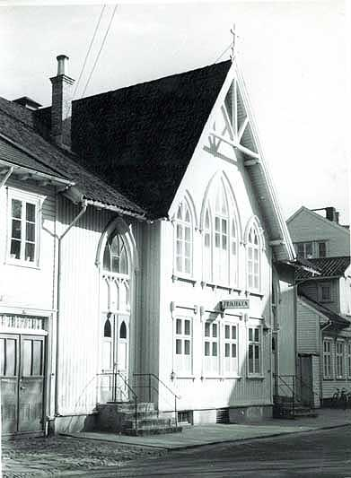
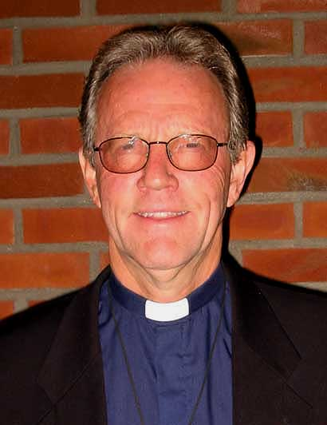
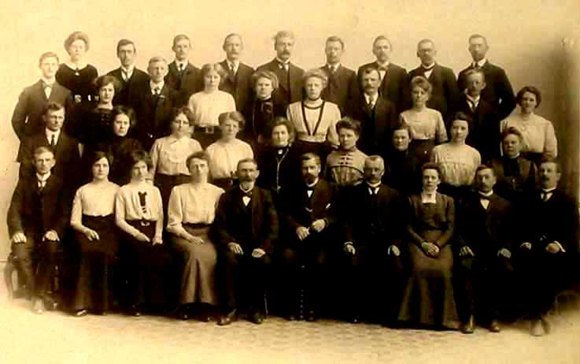
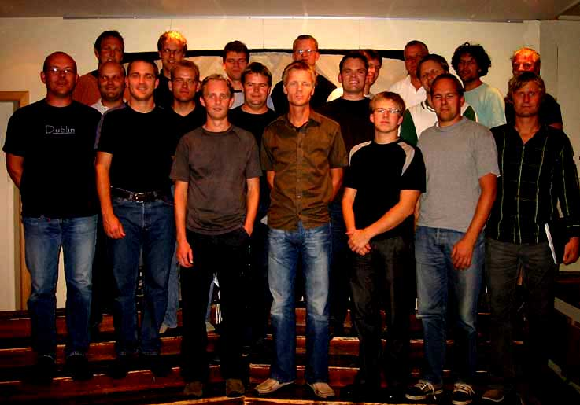
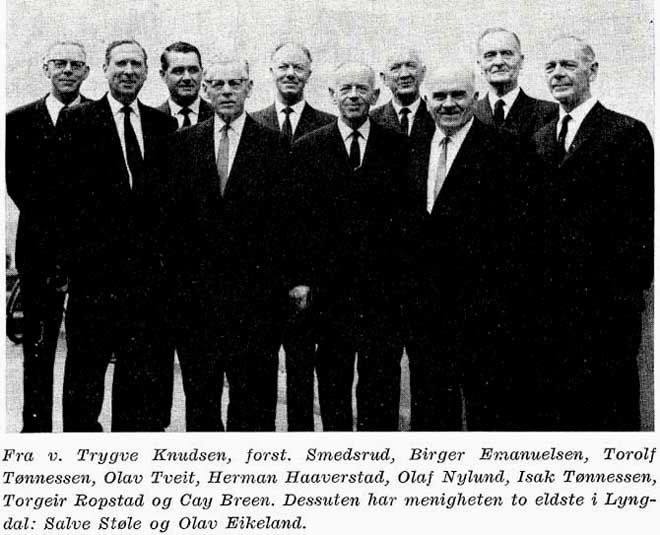

Kristiansand frikirke
Foto og tekst: Tor Tønnessen (2006)
Starten og den gammle kirkebygningen
Har du kommentarer, korreksjoner, interessante bilder, bilder med samme motiv som de viste, men med bedre kvalitet? Ta kontakt med Tor Tønnessen. E-post: tortoe2@online.no
Denne billedserien tar for seg sporadiske glimt i bilder av historien til Den Evangelisk Lutherske Frikirke, Kristiansand menighet. Den er langt fra fullstendig, og går ikke i dybden, men består av elementer som har dukket opp på en forholdsvis lettvint måte. Mange personer som opp gjennom årene har gjort en formidabel innsats i menigheten kunne fortjene å nevnes. Men i denne serien har vi bare kunnet trekke frem enkelte av dem, uten forkleinelse for de andre. Mange, som kjenner menighetens historie, vil derfor savne mye. Serien baserer seg hovedsakelig på en bildeutstilling som ble montert i kirken i forbindelse med menighetens 125-års jubileum høsten 2002. Det var den gang tenkt som en engangsforetéelse. Mange opplysninger om bildene, som delvis var utlånt av forskjellige personer, ble ikke ivaretatt ved demonteringen. Derfor mangler opplysninger, for enkelte bilders vedkommende, i denne presentasjonen. De bakenforliggende årsaker til at kirkesamfunnet Frikirken ble dannet kan du lese om på Frikirkens egne nettsider: frikirken.no og Kristiansand frikirke. Der kan du også finne informasjon om Frikirken i dag.
Foto: Tor Tønnessen
Frikirkens bygninger i dag. Tollbodgt. 66 og 64. Kirken til venstre. I bygget til høyre disponerer menigheten 1. og 2. etasje. Resten er selveierleiligheter. I første etasje finner vi "Fricafé" og i 2. etasje menighetens kontorer.
Hvordan startet så det hele?
Foto: Fra Frikirkens søndagsskoles jubileumsskrift 1974
En orientering om den spede begynnelse i Hotel Britannia i 1874. Det var søndagsskolen som var starten. Etter hvert kom Marius Giverholt med i søndagsskolearbeidet. Søndagsskolen hadde i den første tiden en omflakkende tilværelse, og den vokste seg snart så stor at den måtte ha eget lokale. Etter hvert kunne de planlegge et kirkebygg i Tollbodgt. 66. Utpå året 1877 kom Giverholt i forbindelse med frikirkemenigheten i Arendal. Giverholt og hans venner besluttet da å danne den første evangelisk-lutherske frimenighet i Kristiansand. Den ble konstituert 23. september 1877. Kirkebygget ble tatt i bruk 7. oktober, men var ikke helt ferdig før 28. oktober da man holdt nattverd for første gang og søndagsskolen flyttet inn. 1877 regnes derfor som grunnleggingsår for Kristiansand Frikirke. Marius Giverholt ble menighetens første forstander.
Hans barnebarn, Dag Giverholt, skrev en artikkel i Frikirkens organ "Budbæreren" 4. mai 1974, i forbindelse med søndagsskolens 100-års jubileum samme år. Den gir et godt og mer detaljert innblikk i starten: Frikirkens søndagsskolearbeide i Kristiansand 100 år
Foto: Tor Tønnessen 1957
Og slik så da Frikirken ut i Tollbodgatens gatebilde fra 1877 og frem til 1964, da den ble revet. Fædrelandsvennen, det nye bladet i byen, skrøt svært av bygget (Les om dette i Dag Giverholts artikkel): "Bygningen, der er holdt i en stilart hvori gotikken spiller hovedrollen, gjør et godt inntrykk og er især i det indre arrangement overmåte heldig.". Til høyre for kirken ligger forstanderboligen, senere vaktmesterbolig. Nabobygget til venstre ble kjøpt av menigheten og innlemmet i tomten da man skulle bygge ny kirke i 1960-årene.
Foto: Fra Frikirkens arkiv. Fotograf og eier ukjent
Her er det eldste bildet av "Det indre arrangement" som jeg har kommet over. Det kan synes som om kirken her blir brukt til en privat sammenkomst. Nisjen i bakgrunnen var ikke med da kirken ble bygget. Her var det bare en rett vegg med talerstol midt foran. Nisjen kom i 1929, og det ble bygget kjøkken i underetasjen. Man aktet å flytte orgelet fra orgelgalleriet og ned i nisjen. Dørene på hver side av podiet fører til trapper ned til kjøkkenet. Under kirken for øvrig var det stort sett vedkjeller med kjellerlem nær ovnene.
Tegning: Tor Tønnessen 1981
I forbindelse med at kirken fikk nytt orgel i 1982, ble det laget et festskrift om orglene i kirken. Det første orgelet kom i 1914 og ble plassert på "Orgelgalleriet". Men da man ikke hadde fotografier av dette, ble undertegnede bedt om å lage denne tegningen etter forklaring av de eldre som husket hvordan orgelet tok seg ut der. Orgelet var bygget ved A. Landrogs Orgelfabrik i Haugesund og hadde 8 stemmer. De to vinduene i bakgrunnen vender ut mot Tollbodgaten. Også her fremgår at "især er det indre arrangement overmåte heldig."
Foto: Fotomagasinet, fra Frikirkens arkiv.
Av dette bildet får vi et inntrykk av hvordan "Plattformen", som podiet ble kalt, så ut etter at orgelet ble flyttet dit i 1929. Orgelet fikk da noen spissbuer på toppen, og i begynnelsen av 1930-årene elektrisk pumpe. Det framgår at når menighetens kor slo seg sammen til felleskor med orkester i forbindelse med Ungdomsforeningens 50-års jubileum i 1946, var det svært trangt om plassen på plattformen.
Foto: Tor Tønnessen
Av dette bildet får vi et inntrykk av hvordan "Plattformen", som podiet ble kalt, så ut etter at orgelet ble flyttet dit i 1929. Orgelet fikk da noen spissbuer på toppen, og i begynnelsen av 1930-årene elektrisk pumpe. Det framgår at når menighetens kor slo seg sammen til felleskor med orkester i forbindelse med Ungdomsforeningens 50-års jubileum i 1946, var det svært trangt om plassen på plattformen.
Foto: Tor Tønnessen
"Orgelgalleriet", eller "midtgalleriet"
Foto: Tor Tønnessen
Hovedsalen, med foldedøren åpen inn til "Lilleværelset" i bakgrunnen under orgelgalleriet.
Foto: Tor Tønnessen
"Bygalleriet". Det galleriet som vendte mot bysiden av salen, ut mot forstanderboligen.
Foto: Tor Tønnessen
Under "Bygalleriet"
Foto: Tor Tønnessen
"Lundsgalleriet". Det galleriet som vendte mot Lundsiden av salen
Foto: Tor Tønnessen
Under "Lundsgalleriet"
Foto: Tor Tønnessen
Den gamle Frikirken idet den står for fall i august 1964. Bygningene på begge sider av kirken er allerede revet.
Foto: Fra "Festskrift til kirkeinnvielsen i 1966"
Her noen bilder fra rivingsdugnaden.
Ny kirkebygning og de første forstanderne
Foto: Fra "Festskrift til kirkeinnvielsen i 1966"
For å bygge ny kirke trengtes en byggekomité -
Foto: Fra "Festskrift til kirkeinnvielsen i 1966"
- og en finanskomité.

Foto: Fra "Festskrift til kirkeinnvielsen i 1966"
Når disse komitéenes arbeid var kommet langt nok, kunne grunnsteinen til ny kirke legges ned. Det var mangeårig eldste, Herman Haaverstad, som fikk det ærefulle oppdraget.
Foto: Fra jubileumsskriftet ved 100-års jubiléet i 1977
I januar 1966 sto den nye kirken ferdig. Arkitektfirmaet Brantzeg & Haugen vant arkitektkonkurransen, og det var arkitekt Arild Lauvland som var utførende. Hovedentreprenør var firma Kruse Smith. Fagbladet "Tegl" hadde en stor reportasje om bygget i nr. 2 1966.
Foto: Fra "Tegl" nr. 2 1966
Bildet viser planløsningen av 1. etasje. I kjelleren er det peisestue, matsal og to hobbyrom som alle kan slåes sammen til ett rom. Videre er det kjøkken, stor garderobe, toalettanlegg, tilfluktsrom med parkering og diverse tekniske rom. I 2. et. er det galleri og vaktmesterleilighet. Leiligheten er nå ominnredet til speiderlokaler, og vaktmestertjenester leies eksternt. Salene på bildet rommer vel 600 personer til sammen, inkl. galleriet.
Foto: Arnstein Hasaas, fra "Tegl" nr. 2 1966
Bildet viser hovedsalen slik den fremsto i den nye kirken i 1966. Billedteppet på fondveggen er vevd av billedveversken og kunstneren Else Marie Jakobsen. Et pipeorgel, delvis med piper fra det gamle orgelet, ble plassert i rommet bak sprinklene til høyre i 1968. Dette orgelet ble levert av Vestfold Orgelbygg og hadde 12 stemmer. Talerstolen er av murstein. Den er nå revet til fordel for en flyttbar talerstol av furu.
Foto: Tor Tønnessen
Agderkultur har en stor presentasjon av Else Marie Jakobsens bildetepper
Else Marie Jakobsens vevde teppe på fondveggen. Hun forteller i "Festskrift ved kirkeinnvielsen" at teppets egentlige navn var "For den vei er smal". Foruten krusifikset vises den brede og den smale veg samt flere andre kristne symboler og begreper.
Foto: Arnstein Hasaas, fra "Tegl" nr. 2 1966
Her vises et utsnitt av bakre del av hovedsalen med galleriet.
Foto: Tor Tønnessen 27/4 1981 kl. 11.08
Når det er sommertid, inntrer denne vakre lysvirkingen på fondveggen i begynnelsen av gudstjenesten kl. 11. På grunn av en fold i teppet treffer solskinnet "den smale vei" på en spesiell måte. Det er noe fint symbolsk i dette at lyset ovenfra lyser opp den smale vei.
Foto: Tor Tønnessen
I den nybygde kirken fikk forstanderen kontor sentralt plassert ved inngangen til podiet (rom 7 på bilde 2-020). Etter hvert som staben økte ble det behov for mer kontorplass. Dette lot seg løse i den gamle "Lysbadklinikken" i Tollbodgt. 62a som menigheten etter hvert fikk kjøpe. Da Tollbodgt. 62b, som lå mellom Lysbadklinikken og kirken, var til salgs, fikk menigheten også sikret seg denne eiendommen. Etter en brann i en leilighet i toppetasjen på Lysbadklinikken ble begge bygningene revet, og bygget som vises på dette bildet ble oppført. Det sto ferdig i 2001 og fikk nr. 64, samme nr. som vaktmesterboligen ved den gamle kirken hadde. Selve kirken har nr. 66.
Foto: Tor Tønnessen
Det opprinnelige forstanderkontoret i kirken ble i 2005 omgjort til et lite kapell som kalles "Det stille rom". Da den gamle kirken ble revet og da man skulle kaste rivingsrestene, hadde ikke Sigfred Stien hjerte til å kaste korset som sto på taket på den gamle kirken. Han tok vare på det. Nå er det kommet til heder og verdighet igjen i dette rommet. Korset, slik det sto på taket på den gamle kirken, kan du se på bilde nr 3 fra toppen.
Forstanderne
Hva er det så som har fylt Frikirkens lokaler opp gjennom årene? Helt sentralt har selvfølgelig forkynnelsen av Guds ord stått. I den forbindelse er menighetsforstanderne nøkkelpersoner. I dag kalles de heller for pastorer. I det følgende presenterer vi dem i kronologisk orden.
Foto: Køhn. Bildet henger på Frikirkens kontor.
Som vi har sett i innledningen var Marius Giverholt den første forstanderen. Her ser du et bilde av ham. Han var forstander fra 1878 til 1882, 4 år. Hans virke i Kristiansand kan du lese mer om i Dag Giverholts artikkel
Foto: Fra "Festskrift for Kr.sand Menighet 100 år" 1977
I brev av 11. okt. 1877 meddeler Giverholt i brev til stiftamtmann Bonnevie at han er antatt som forstander i Frikirken. Teksten lyder slik:
Hr. Stiftsamtmand Bonnevie. Som antagen forstander for den her i byen, i henhold til Dissenterloven af 16 Juli 1845 § 2, dannede evangelisk-lutherske frimenighed, lover og forsikrer jeg, Kand. theol. M. Giverholt, at ville i den anførte stilling som menighedsforstander holde mig statens love efterrettelige og være sandhed og pligt tro. Ærbødigst M. Giverholt. Kristianssand 11. Okt. 1877.
Fra "Festskrift for Kr.sand Menighet 100 år" 1977
Her har vi Giverholt og fru Emilie med familie.
Foto: Fotograf ukjent. Bildet henger på Frikirkens kontor.
Den neste forstanderen var Aslak Findreng. Han sto i tjenesten fra 1882 til 1924, hele 42 år. Han har lengst tjenestetid av alle forstanderne.
Fra "Festskrift for Kr.sand Menighet 100 år" 1977
Også Findreng lovet å være "landets love lydige":
"Som antagen forstander for den evangelisk lutherske Frimenighed hersteds lover jeg som sådan at være landets love lydige og holde meg dem efterrettelig. Kristianssand 8. September 1882. A. Findreng"
Foto: Fotograf ukjent. Bildet henger på Frikirkens kontor.
I 1924 kom Carl Birkenes. Han sto til 1953. Også han hadde lang tjenestetid, hele 29 år. I 1930 reiste Birkenes til USA en tid. Didrik Andersen var da hans stedfortreder.
Fra Frikirkens arkiv
Her er ordinasjonsbeviset til Birkenes. Det er ukjent hvorfor det er datert først i 1942. Kan det være skriveforvrengning for 1924?
Foto skaffet av Sigmund Sandvand
Mens menigheten diskuterte hvem neste forstander skulle bli, og inntil han ble kalt, betjente Johan Sandvand menigheten i årene 1953 til 1956, 3 år.
Foto: Ruth. Bildet henger på Frikirkens kontor.
Ole Modalsli var forstander i årene 1956 til 1962, 6 år. Han hadde studiepermisjon to år i tiden 1959 til 1961. Modalsli var den første som flyttet inn i menighetens nybygde forstanderbolig i Dovreveien 1 på Eg.

Foto utlånt av Leif Gundersen
Under studiepermisjonen til Ole Modalsli var Sigvard Engeset vikarforstander.
Foto: Hamre. Bildet henger på Frikirkens kontor.
I Einar Smedsruds forstanderperiode, 1962 til 1975, 13 år, ble den nye kirken bygget. I byggetiden fikk menigheten benytte Bedehuset i Dronningensgate til gudstjenestene, og lokaler i den gamle lærerskolen, tvers over gaten for kirken, til andre møter.
Foto: Hamre. Bildet henger på Frikirkens kontor.
I 1975 kom Sverre Jølstad inn som forstander. Han sto til 1991, 16 år.
Foto: Ivar Hamre. Bildet henger på Frikirkens kontor.
Nestemann i forstanderrekken var Oddvar Søvik. Han var pastor ved siden av Sverre Jølstad i 7 år. Tjenestetid 1984 til 1997, 13 år.
Foto: Ivar Hamre. Bildet henger på Frikirkens kontor.
Også Oddvar Søvik fikk en annen pastor ved sin side i noen år, nemlig japanmisjonær Arnt Sigurd Sollie. Tjenestetid 4 år fra 1994 til 1998. Da dro han igjen ut til Japan.
Foto: Tor Tønnessen
Forstander i dag, 2006, er Jan Gossner. Han tiltrådte i 1997.
Menighetsplanting
Menigheten har hatt som strategi å opprette "dattermenigheter" i byen og omegn. I 1897 kom Lillesand og Flekkefjord, i 1901 kom Tveit. I 1907 fulgte Øvrebø/Hægeland, og i 1916 Vennesla. Så gikk det 60 år før det igjen ble fart i dette arbeidet. I 1977 kom Randesund. I 1981 Lyngdal. Vågsbygd fulgte i 1986 og Songdalen i 1990. Randesund menighet har også "født en datter", nemlig Hånes menighet. Kristiansand menighet har dermed også blitt "bestemor".
I det følgende presenterer vi kirkene til de fire yngste "Frikirkedøtrene" til Kristiansand Menighet:
Foto: Tor Tønnessen
Randesund Frikirke. Etablert 1977.
Foto: Fra "Midt i livet", Den evang.-luth. Frikirke 125 år.
Lyngdal Frikirke. Menigheten ble etablert i 1981. Etter kort tid tok Birger Hammersmark imot forstanderkall fra den nyetablerte menigheten. Bygningen, tidligere Alléen bedehus, ble overtatt, restaurert og utvidet. Den ble tatt i bruk i 1995.
Foto: Tor Tønnessen
Vågsbygd Frikirke. Menigheten ble etablert i 1986. Kirkebygget ble innviet i 1984.
Foto: Tor Tønnessen
Songdalen Frikirke. Menigheten ble etablert i 1990. Åtte sammensatte Moelvenbrakker huset menigheten i de første årene. Kirkebygget ble tatt i bruk i 1994.
Hjelpeforstanderne
I tillegg til de forstandere som er nevnt på de foregående sider, har flere såkalte "hjelpeforstandere" betjent menigheten. Hjelpeforstanderne har oftest blitt tilsatt først og fremst for å bistå ved nyetablering av menigheter, og dernest betjene disse som forstandere. Av "hjelpeforstandere" nevner vi følgende to:
Foto: Tor Tønnessen 1957
Ansgar Mørland betjente Randesund menighet 1976 - 1979 og Songdalen menighet i tiden 1990 - 1991. Dette bildet viser imidlertid Mørland i en noe yngre utgave enn da han betjente disse menighetene.
Fra foto utlånt av Olaug Hammersmark
Alf Petter Hammersmark. Hjelpeforstander 1979 - 1986. Vågsbygd menighets første forstander 1985 - 1992.
Barnearbeidet
Barnearbeidet har lengst tradisjon i menigheten. Søndagsskolen var jo starten på det hele. I begynnelsen lå barnetallet på 350 - 450 barn fordelt på 16 - 18 klasser. Flest barn hadde skolen i 1908 med ca. 950 barn og en gjennomsnittsoppslutning på 700 fordelt på 30 klasser. I 1973 var tallet ca. 500 barn. Dette er imponerende tall, og det krevdes mange lærere. I det følgende presenterer vi noen bilder av personalet:
Foto: Fra Frikirkens arkiv
Søndagsskolepersonalet i 1880
Foto: Fra Frikirkens arkiv
Søndagsskolepersonalet i 1912
Foto: Fra Frikirkens arkiv
Søndagsskolepersonalet ved 70-års jubiléet i 1944.
Foto: Fra festskriftet "Frikirkens søndagsskole 100 år"
Søndagsskolepersonalet ved 100-års jubiléet i 1974.
Foto: Fra festskriftet "Frikirkens søndagsskole 100 år"
Frikirkens søndagsskole ved 100-års jubiléet i 1974
Foto: Fra festskriftet "Frikirkens søndagsskole 100 år"
Søndagsskolefestene i den gamle Frikirken huskes med glede av mange gamle kristiansandere.
Fra festskriftet "Frikirkens søndagsskole 100 år"
Etter hvert som byen vokste og bosettingsmønsteret endret seg, gikk barnetallet ned. Det ble derfor nødvendig å desentralisere. Det ble opprettet flere søndagsskoler i tillegg til den i kirken. Først ut var en klasse (1955) som etter litt omflakking endte på Statsøvingsskolen i Kongsgård allé i 1960. I 1961 kom Slettheia. Denne søndagsskolen vises på dette bildet som representant for alle de desentraliserte klassene. I 1966 kom en klasse i Kongsgård II, i peisestua til Olav Beckmann. I 1966 kom også Vardåsen søndagsskole som holdt til i Vardåsen barneskole. I dag er det desentraliserte arbeidet overtatt av de nyetablerte menighetene.
Foto: Fotograf ukjent
Til Søndagsskolen hørte også en jentebibelklasse og en guttebibelklasse for alderstrinnet 13 til 18 år. De hadde sine møter samtidig med søndagsskolen. Disse hører egentlig inn under "Ungdomsarbeid", men blir likevel omtalt her på grunn av sin tilknytning til søndagsskolen. På bildet bistår guttebibelklassen er uheldig bilist i svingen like vest for Birkeland sentrum, mens de er på vei til sin årlige ukestur til ei hytte på Telemarksheia ved Treungen ca. 1952-53.
Foto: Fra jubileumsskriftet "Frikirken Kristiansand 100 år"
Menigheten har et rikt speiderarbeid, og opp gjennom årene har det vært drevet mange forskjellige jente- og gutteforeninger. Av plasshensyn lar vi alle disse være representert av "Jenteklubben" omkring 1977.
Foto: Fra jubileumsskriftet "Frikirken Kristiansand 100 år"
Menigheten drev i mange år kristendomsskole som supplement eller erstatning for folkeskolens kristendomsundervisning. Her representert ved en klasse fra omkring 1977. Undervisningen i katekisme og bibelhistorie var en god forberedelse til konfirmantundervisningen.
Foto: Tor Tønnessen
Sang og musikk har en fremtredende plass i menighetslivet, og barna blir tidlig med i korarbeidet. Her er "Knøttekoret" i 2002.
Foto: ved Rannveig Hæraas
Jentekoret ca. 1980. Koret ble startet som "Barnekoret" i år 1971. Dirigent var Rannveig Stangenes (nå Hæraas, stående til høyre). Dette var forløperen til dagens barnekor "Jubilo":

Foto: Tor Tønnessen
Foto: Tor Tønnessen
Barnekoret "Jubilo" 2002.
Ungdommsarbeid
Foto: Fra jubileumsskriftet "Kr.sand Frikirkes ungdomsforening 75 år. 1896 - 1971"
Våren 1896 tok forstander Findreng initiativ til å danne en ungdomsforening. Den første "bestyrelse" vises på dette bildet. Findreng var selv formann de første årene. Foreningen hadde 329 medlemmer det første året. I 1947 var tallet 519. Mange var medlem i Ungdomsforeningen uten å stå tilsluttet menigheten. Foreningen var derfor et godt kontaktledd ut i byen. Den var også en god skole for lederutvikling. Foreningen sto lenge for arrangement av to faste ukentlige møter. I tillegg var det ett fast møte i uken som menighetsledelsen tok seg av. Foreningen ble etter hvert nærmest en menighet i menigheten.
Foto: Opprinnelse ukjent
Ungdomsforeningen arrangerte mange fester. Her fra en fest i den gamle kirken.
Foto: Fra Frikirkens arkiv
Dette er foreningens styre i jubileumsåret 1946 da foreningen fylte 50 år. Formannen i jubileumsåret var Arne Knudsen, nummer tre fra høyre bak. Etter hvert ble det egentlige ungdomsarbeidet i menigheten drevet av juniorforening, juniorkor, "Over 18-gruppa", bibelklasser og speideren. Ungdomsforeningen hadde ingen aldersgrense oppad, og ble "forgubbet". Den ble derfor nedlagt i 1981. Men da hadde den opp gjennom årene hatt uvurderlig betydning både i og utenfor menigheten.
Foto: Fra Frikirkens arkiv
I en tid med mangel på offentlig sosialarbeid, så ungdomsforeningen en viktig oppgave her. I 1919 ansatte foreningen en utdannet sykepleierske, Serina S. Valand. I 1922 ble hun avløst av søster Tomally Bentsen, bare kalt søster Mally. (Bildet). Hun måtte, i en alder av 65 år, slutte i arbeidet i 1961 grunnet dårlig helse. Da hadde hun hatt stillingen i ca. 40 år og var en "institusjon" i byen. Kommunal sykepleie overtok da etter hvert. Det er ført nøyaktige protokoller over samtlige besøk i hele denne perioden. F. eks. forteller årsberetningen for 1924 at hun var ute i pleie 73 hele døgn, 37 hele dager, 45 netter,108 halve dager, 72 besøk, 202 besøk med pleie og stelt 9 døde. Hun fikk Kongens Fortjenstmedalje i 1962.
Foto: Fra jubileumsskriftet "Kr.sand Frikirkes ungdomsforening 75 år. 1896 - 1971"
Ungdomsforeningen hadde mange underavdelinger i tillegg til Sykepleien: Blomstermisjonen, traktatmisjonen, bibliotek, kor m.m. Blomstermisjonen endret etter hvert navn til Frikirkens Sykekomite. Her er representanter for komitéen i sving med å holde andakt på et av byens aldershjem.
Foto: ved Klara Lauvland
Foreningen følte arbeidet blant de unge som viktig, og siden mange medlemmer etter hvert dro på årene, startet man i 1923 opp med "de unges møter" for aldersgruppen 13 til 18 år. Dette ble starten på "Junior" som foreningen kalles i dag. I 1928 ble ansvaret for denne virksomheten overlatt til menigheten. Turer og leirer, både lokalt og på landsbasis, var viktig i ungdomsarbeidet. Her ser vi guttene som deltok på Juniors tur til Skauen i Høvåg i 1945. Midt i flokken ser vi Tolv Lauvland som la ned et betydelig arbeid i løpet av de 19 år han var juniorleder.
Foto: ved Klara Lauvland
- Og her er juniorjentene i Høvåg i 1945.
Foto: ved Klara Lauvland
Og her har vi håndballaget til Junior i Kristiansand på en juniorleir i Treungen i 1943. Til høyre står Arnt Sigurd Abrahamsen som nå er 77 år. Jeg spurte ham hvordan de kom seg på leir i en krigstid med reiserestriksjoner og vedgass som drivstoff i bussene og de få bilene som var til disposisjon. Svar: Vi syklet.
Foto: ved Klara Lauvland
Her er beviset: Juniorer på vei til leir på Risøya i 1940 pr. sykkel.
Foto: ved Harald Sødal
Sang og musikk var også viktige ingredienser i ungdomsarbeidet. Vi kjenner til flere "oppblomstringer" av musikalsk art: 1912 til 1915: "Barnekoret" 9-15 år. 1931 til 1938: "De unges musikkor". 1940 pluss noen år: "Pikekoret" og "Mannsstrengemusikken". 1944 til 1949: Et blandet juniorkor under ledelse av Agathe Bjørnestad. Det holdt opp et par år, men så kom "Juniorkoret" i gang igjen i 1951 og holdt på til 1997 da det ble lagt ned. Dette koret ble 46 år. Siden har andre kortyper dukket opp. På bildet ser vi Juniorkoret og Juniororkesteret i 1961. Dirigent: Harald Sødal. Dirigent for Juniorkoret 1951-1954: Kjell Høyesen. 1954-1960: Inger Hovland.
Foto: Plateomslag
Juniokoret i 1976 i forbindelse med plateutgivelse. Dirigent: Harald Sødal. Harald Sødal overtok koret i 1960 og på 1970-tallet ble hans frue Margrethe fast pianist og leder. De sto til 1993. Harald fikk altså 33 minus 2 år som dirigent. I årene 1966 - 1968 overtok Erling Sævig som vikar p.g.a. Haralds studier. I 1993 ledet menighetens nye organist, Gunnhild Solem Accola, koret. I 1994-1996: Kjetil Høyer-Jonassen. Deretter Ingrid Schnell med team, frem til nedleggelse i 1997.
Foto: ved Otto Hovland
Andre grupperinger har også dukket opp nå og da. Her ser vi "Ungdomskvartetten" av 1940. Denne gruppa, som kom i gang i 1939, tok initiativet til dannelsen av Mannskoret i 1943.
Foto: ukjent
Og her er "Ungdomskvartetten" av 1964. Fra venstre: Sigvald Tveit, Ommund Ringøen, Bernt Olav Karlsen og Tormod Stangenes.
Foto: ved Rigmor Stakkeland
Et nytt ungdomskor dukket opp i 1985, nemlig "Kor 7". Navnet ble valgt fordi det på den tiden ble det syvende koret i menigheten. Koret måtte legge ned i 2001. Rigmor Stakkeland var dirigent ved 10-års jubiléet.

Foto: ukjent
Frikor" ble stiftet i 1997 som et prosjektkor og fortsatte siden med andre prosjekter. Dirigent var Svein Ove Olsen. Siden har nåværende fast ansatte sang- og musikkleder i menigheten, Jon Kleveland, overtatt.
Sang og Musikk
Foto: Fotograf ukjent, fra Frikirkens arkiv.
I 1982 fikk menigheten sitt tredje orgel. I den anledning samlet menighetens musikalske krefter seg til et stort felleskor med orkester, til innvielseskonsert 24. oktober 1982. Dirigent er Thorleif Sødal. Orgelet, som sees til høyre, ble bygget av Rudolf Janke i Tyskland. Det var planlagt til 14 stemmer, for ca. 500.000 kroner. En anonym gave gjorde at det kunne bygges med 17 stemmer.
Fra "Festskrift ved innvielse av nytt orgel 1982"
Mange har spilt ved de mange møter i kirken på frivillig basis. Men menigheten har hatt noen som har vært ansatt som organister, da ved siden av sitt vanlige virke: Jakob Sødal, 24 år. Ruth Holberg (f. Andreassen), 9 år. Agathe Gundersen (f. Bjørnestad), 3 år. Egil Andreassen, 4 år. Hans Frigstad, 32 år. Han sluttet i 1976, og fra da av hadde ikke menigheten noen ansatt organist før i 1990, da Gunnhild Solem Accola ble ansatt. Hun sluttet i 1998. Vi lar alle disse være representert ved Hans Frigstad. På bildet betjener han orgel nr. 2.
Foto: Tor Tønnessen
I 1998 ble Jon Kleveland ansatt i 50% stilling som sang- og musikkleder. Fra år 2000 ble stillingen utvidet til 100%. Han betjener nå orgelet.
I det rike musikklivet i menigheten har det vært utallige innsatsvillige mennesker i aksjon. Det er umulig å nevne dem alle, og vi må derfor nøye oss med et utvalg. Tre voksenkor har vært sentrale opp gjennom årene: Blandetkoret, Musikkoret og Mannskoret. Foruten Harald og Margrethe Sødal som ledet Juniorkoret fra 1960 til 1993, 33 år, har særlig 5 personer vært "søyler" i det voksne korarbeidet i etterkrigstiden: Nils Sødal, Otto Andersen, Otto Hovland, Thorleif Sødal og Leif Sørensen. Vi har dessverre ikke noe disponibelt portrett av Otto Andersen, som ledet Musikkoret fra 1941 til 1966, 25 år, men han kan sees på korbildene av Musikkoret. Leif Sørensen kan sees på det fjerde bildet under.
Foto: Tor Tønnessen
Thorleif Sødal har vært en av de drivende krefter i sang- og musikklivet. Han var i mange år tenor i Blandetkoret, og overtok som dirigent i årene 1966 til 1992, 26 år. Han var initiativtaker til, og dirigent for orkesteret, og har betjent orgelet med stor dyktighet. Han fikk Kongens fortjenstmedalje for sin innsats i 2001.
Foto: Tor Tønnessen
Thorleifs far, Nils Sødal (bildet), dirigerte Blandetkoret fra 1929 til 1966, 37 år. Før Nils dirigerte hans far, Jakob Sødal, koret fra 1896 til 1926, 30 år. Tre generasjoner Sødal har altså, med et kort avbrekk 1926-1929, ledet Blandetkoret fra 1896 til 1992, 96 år!
Foto: Tor Tønnessen
I 1943 startet Mannskoret opp igjen etter at det første mannskoret 1928 - 1938 var gått inn. Mannskoret måtte legge ned i 1986 etter 43 års virke. I hele denne tiden var Otto Hovland dirigent. Han fikk Kongens fortjenstmedalje i 1983 i forbindelse med korets og dirigentens 40-års jubileum.

Foto: Fra Arne Ringsby: "Med Kr.sand Frikirke gjennom 125 år"
En annen ressursperson må også nevnes: Egil Andreassen. Han var, som tidligere nevnt, organist 1940 - 44, og har også siden betjent orgelet utallige ganger. I en årrekke var han Musikkorets faste pianist. I 1997 fikk han Kongens fortjenstmedalje for 52 år som pianist og organist. På bildet tildeles han medaljen av varaordfører Harald Sødal. I bakgrunnen skimtes Leif Sørensen som da var dirigent for Muskkoret.
Foto: Fra "Festskrift til kirkeinnvielsen 1966"
Orkesteret var som regel i sving ved større anledninger: Nyttårsfester, 17. mai-fester, jubiléer eller når alle korene av og til slo seg sammen til felleskor. Bilder av orkesteret ser du derfor helst på bildene av de forskjellige felleskorene. Men i 1965 lot de seg avbilde alene. Bildet er tatt i Arendal Frikirke. Opp gjennom årene har det vært mye orkestermusikk. I Blandetkorets skrifter finner vi bl. a. at i 1902 "arbeidet koret og det nystiftede orkester med en aftenunderholdning 3dje påskedag".
Foto: Fra Frikirkens arkiv
Kristiansand Frikirkes Blandetkor er det eldste koret i menigheten. Koret ble en realitet i 1886. Bildet viser koret i 1889. Den første tiden ble koret bare kalt for Sangkoret. Det gjaldt fremdeles i 1919. Men etter hvert som det kom flere kor ble det naturlige navnet Frikirkens Blandetkor. Dirigenter 1886 til 1890 var Helmert Berntsen og T. Gabrielsen. Gabrielsen sees midt i bildet med en bok. Blant korene har Blandetkoret vært flinkest til å la seg avbilde opp gjennom tiden, og er derfor representert i denne serien med flest bilder.
Foto: Fra Frikirkens arkiv
Koret i 1903. Dirigent: Jakob Sødal. I 1890 ble musikkinstruktør Christensen kalt som dirigent. Utover på 1890-tallet sluttet han, og Marie Nilsen ble midlertidig instruktør. Hun "oppdaget" en ung mann på bassen som hun mente kunne overta: Jakob Sødal. Han tiltrådte i januar 1896 og sto til 1926, 30 år.
Foto: Fra Frikirkens arkiv
Koret på tur til Iveland i 1910. Moter varierer.
Foto: Fra Frikirkens arkiv
År 1912. Kan det være i anledning 25-års jubiléet i 1911? I 1911 satte forøvrig koret ned en finanskomité for anskaffelse av orgel. Sammen med Musikkoret, som hadde sin start i 1896, ble en rekke konserter holdt med dette formål for øye. Orgelet sto ferdig på midtgalleriet i kirken i 1914 og domorganist Abrahamsen var engasjert til å innvie det.
Foto: Eies av Tor Tønnessen
År 1919. For å være litt personlig: Dette bildet har jeg arvet etter min far, Leif Tønnessen, som sees bakerst som nr. 3 fra høyre. Han begynte som tenor i koret i 1917, samtidig med sin kamerat Nils Sødal, nr. 3 fra venstre nest bakerst. Dirigent: Jakob Sødal.
Foto: Fra Frikirkens arkiv
År 1934. Dirigent: Nils Sødal, nr. 4 fra venstre i 2. rekke. Etter at Jakob Sødal var blitt syk i 1926 vekslet Nils Sødal og Ruth Holberg (f. Andreassen) om å lede koret. I 1928 kom det oppsigelse fra Jakob, og fra våren 1929 var Nils Sødal dirigent. Hans dirigentperiode varte til 1966, 37 år.
Foto: Eies av Tor Tønnessen
År 1936. Koret er 50 år. Dirigent: Nils Sødal
Foto: Fra Frikirkens arkiv
År 1946. Blandetkoret er 60 år. Dirigent: Nils Sødal
Foto: A. Hasaas. Eier: Tor Tønnessen (nr. 5 bak fra venstre)
År 1956. Koret er 70 år. Dirigent: Nils Sødal
Foto: Arnstein Hasaas. Eier: Tor Tønnessen
År 1961. Koret er 75 år. Dirigent: Nils Sødal. Siste bilde av koret i den gamle kirken.
Foto: Eies av Tor Tønnessen
År 1971. Koret er 85 år. Bildet er tatt 3. søndag i advent 1971. Ny kirke og ny dirigent: Thorleif Sødal. Han begynte som dirigent i 1966 og sto til 1992, 26 år. Nils Sødal fortsatte som sanger enda noen år. Han står bakerst, på førstebassen, som nr. 2 fra venstre.
Foto: Fotoservice v/Ivar Tønnessen. Eier: Tor Tønnessen
Koret er 95 år i 1981. Bildet er tatt 3. søndag i advent 1980. Dirigent: Thorleif Sødal.
Foto: Eies av Tor Tønnessen
År 1986. Koret feirer 100-årsjubileum. Dirigent: Thorleif Sødal. Han sluttet i 1992.
Den nye organisten i menigheten, Gunnhild Solem Accola overtok som dirigent fra 1992 til 1995. Turid Berglihn overtok da koret. Hun sto som dirigent frem til år 2000, 5 år. Dette året måtte koret legge ned da nyrekruttering mislyktes. Koret ble 114 år gammelt.
Foto: Fra "Syng til Guds Ære", jubileumsskrift ved korets 100-års jubileum.
Det har vært mange høydepunkter og turer i korets historie. Men Høydepunktet med stor H må vel sies å være da koret sang under jubileumsmøtet i Oslo rådhus i 1977, da Frikirken som kirkesamfunn i Norge feiret 100 år med kong Olav V til stede.
Foto: Fra jubileumsskriftet " 100 år. Frikirken Kristiansand 1977"
sFrikirkens synodeformann Jens Lund Andersen, kong Olav V og Oslos varaordfører Per Høybråten, på vei inn i Oslo rådhus med Blandetkoret i bakgrunnen.
Foto: Fra Frikirkens arkiv
Kristiansand Frikirkes Musikkor hadde sin spede start omkring 1896. Det ble omtalt med forskjellige betegnelser til å begynne med, som f. eks. Musikkorkesteret, Gitarkorpset, Guitarkoret. Det har vært vanskelig å tidfeste de eldste bildene og å fastslå hvilket kornavn de brukte. Ovenstående bilde er antakelig fra ca. 1900. Personene er: Foran: Alf Salvesen. Første rad, sittende fra v.: Birgitte Henriksen, Arne Andersen, Anna Bjørnestad, Gurine Salvesen.2. rad fra v.: Valborg Tønnessen, ukjent, Agnes Larsen, Anton Nilsen. Bak fra v.: Gerh. Gabrielsen, S. Frigstad, ukjent.
Foto: Fra Frikirkens arkiv
Og her er et tidlig "Harpeleikkor". Skal vi tippe ca. 1910?
Foto: Fra Frikirkens arkiv
Gitarkoret 1917. Vi spanderer en navnerekke: 1. rad fra v.: Sigrid Fjelde, ukjent, Arne Fjelde, ukjent, ukjent, Ragna Gundersen f. Pedersen. 2. rad fra v.: Herman Haaverstad, ukjent, ukjent, Ida Haaverstad, Nils Sødal, ukjent, Alma Stray, ..... Askildsen.
Foto: Fra Jubileumsskriftet "Kr.sand Frikirkes Musikkor 100 år"
Musikkoret i 1943. Man kan være i tvil om dateringen 1943 er korrekt. Det er norske flagg på pianoet, og det var en vågsom handling under krigen. Dirigent: Otto Andersen (i midten bak).
Foto: Fra Frikirkens arkiv
Musikkoret ved 50-års jubiléet i 1946. Dirigent: Otto Andersen.
Foto: Fra Jubileumsskriftet "Kr.sand Frikirkes Musikkor 100 år 1996"
Koret en gang på 50-tallet. Dirigent Otto Andersen innfelt øverst til høyre.
Foto: Fra Jubileumsskriftet "Kr.sand Frikirkes Musikkor 100 år 1996"
Musikkoret hadde god kontakt med musikksekretær Thomas Ewald i Dansk Indremission. De fikk mye notemateriell derfra, og deltok på sangerstevner i Danmark. Her fra et felleskor i Ålborghallen i 1960.
Foto: Tor Tønnessen
Musikkoret fikk æren av å være siste kor som sang fra plattformen i den gamle Frikirken 23. august 1964, dagen før rivingen startet.
Foto: Fra Frikirkens arkiv
Musikkoret ved 75-års jubiléet i 1971. Dirigent: Leif Gundersen (midt foran).Han dirigerte koret 1966-1971. Korets forrige dirigent, Otto Andersen døde i 1966, bare 49 år gammel. Dirigent 1971-1975 var Erling Sævig.
Foto ved Leif Sørensen
År 1996. Musikkoret var da 100 år. Dirigent er Leif Sørensen, stående til høyre. Han var dirigent fra 1976 til koret ble lagt ned i 2001, 25 år. Før dirigentperioden i Musikkoret hadde han vært bass i Blandetkoret i 28 år. Altså tilsammen 53 års aktivitet i korlivet i Frikirken. Leif Sørensen ledet i tillegg Frikirkens mannskvartett som besto i ca. 20 år. Den startet opp i 1962. Dessuten kan han traktere både orgel, piano og saksofon ved behov. Også Musikkoret ble offer for manglende rekruttering. Som vi ser av bildet var dette særlig tydelig på musikersiden ved 100-års jubiléet. Koret ble 105 år.
Foto: Fra "Festskrift til kirkeinnvielsen - 1966"
Det ble dannet et mannskor i menigheten i 1928, men det ble lagt ned etter ca. 10 år. Allerede etter et års tid, ca. 1939, var imidlertid "Ungdomskvartetten" dannet. Se tekst nr. 5-072. Det var en dobbel mannskvartett som vel ble stammen da "Mannskoret" startet opp i 1943. Det ser ut til å være sparsomt med billedmateriale fra den første tiden, men på bildet ovenfor har koret latt seg avbilde i 1966 i den nye kirken som da sto ferdig. Dirigent er Otto Hovland som har vært dirigent helt fra starten i 1943.
Foto: ukjent
Her er Mannskoret på 1970-tallet en gang. Dirigent: Otto Hovland.
Foto: Fra Jubileumsskriftet "100 år - Frikirken i Kristiansand".
Her er Mannskoret på 1970-tallet en gang. Dirigent: Otto Hovland.
Foto: Fra Frikirkens arkiv
Mannskoret ved sitt 40-års jubileum i 1983. Dirigent: Otto Hovland. Koret måtte legge ned i 1986 grunnet rekrutteringsproblemer. For en del skyldtes dette at en god del sangere flyttet ut til nydannede dattermenigheter i Randesund og Vågsbygd. Koret ble 43 år.
Foto: Tor Tønnessen
Men mannskortanken lot seg ikke så lett knekke. I januar 2000 kom mannskoret "Vestergabet" på banen, under ledelse av sang- og musikkleder Jon Kleveland. På bildet er koret dessverre noe tynt bemannet. Det teller ca. 30 sangere i alderstrinnene 20- og 30- årene. Jon Kleveland til venstre.
Foto: Fra Arne Ringsby: "Med Kr.sand Frikirke gjennom 125 år"
Her er "Vestergabet" avbildet på kirketrappa. Dirigent Jon Kleveland til venstre.
Foto: Bjørn Holberg
Av og til, særlig ved spesielle anledninger, slo alle korene i Frikirken seg sammen og dannet et stort felleskor, gjerne med orkester til. Det kunne være til det store tradisjonelle julesangmøtet der alle korene opptrådte hver for seg og som felleskor, eller ved jubiléer eller andre spesielle anledninger. Vi har allerede vist felleskoret ved innvielsen av nytt orgel. Se bilde 6-076 på side 6. Ovenfor ser du felleskoret som øver i Domkirken før en konsert der høsten 1956. Dirigent er Otto Andersen. Ungdomsforeningen var 60 år dette året. Kan det være i den anledning?
Foto: Sanghefte
I 1970 slo den kjente amerikanske evangelisten Billy Graham, på stortromma i Europa. Han talte et sted i Tyskland, og talen ble TV-overført til kjempelerreter mange steder i Europa og mange steder i Norge. Kristenfolket samlet seg til kjempearrangementer i store felleslokaler for å delta. De fleste kristne forsamlinger i Kristiansand slo seg sammen og fikk disponere en hangar på Kjevik, som den gang var det største lokalet man kunne oppdrive i byen. Overføring via TV-linjer var visstnok ikke enkelt i en tid da NRK hadde monopol, men på et eller annet vis fikk de det til. Det ble utgitt et eget sanghefte til bruk i Norge. Det besto av populære evangeliske sanger fra USA, men med norske oversettelser i tillegg til de engelske. Siden den gang er mange av sangene blitt populære for bruk også i Norge.
Foto: Fra Frikirkens arkiv
Hver kveld i en uke var det svære forskjellige felleskor av alle byens kristelige sangere som opptrådte. Bildet viser det felles blandetkoret. Korpodiet, i et hjørne av hangaren, ble bygget av Yrkesskolens tømrerlinje og hadde plass til 500 sangere.
Foto: Arnstein Hasaas
Da menigheten feiret 100 år i 1977, stilte dette felleskoret opp. - På bilde 6 fra toppem kan du se felleskoret ved Ungdomsforeningens 50-års jubileum i 1946.
Menighet og Misjon
Foto: Tor Tønnessen
Inngangsprosesjon til en familiegudstjeneste i Frikirken i 2002. Frikirken har tre medlemskategorier: Barn, begrenset medlemsskap og fullt medlemsskap.
Foto: Tor Tønnessen
Frikirken praktiserer barnedåp. Frikirkens lære er den samme som Statskirkens, men Frikirken er uavhengig av staten, og menighetene kaller selv sine pastorer. Ved barnedåpen blir barnet ført inn i medlemskategorien "Barn".
Foto: Eies av Tor Tønnessen
Konfirmantkullet 2. desember 1951 med forstander Birkenes som sentral person. Konfirmantene trer ved konfirmasjonen ut av medlemskategorien "Barn". De som bekjenner seg som kristne, og som ønsker det, blir overført til kategorien "Fullt medlemsskap". De øvrige blir overført til "Begrenset medlemsskap".
Foto: Fra "Festskrift ved kirkeinnvielsen - 1966"
Menighetens "Eldsteråd" i 1966. De "Eldste" er menighetens hyrder. Ved ordinasjon er de overgitt hyrde- og læreembetet og kan forvalte sakramentene på lik linje med forstanderen. Forstanderen er medlem av "Eldsterådet". De er ordinert for livet, men trer vanligvis tilbake som "Aktiv Eldste" ved oppnådd pensjonsalder. Sammen med "Diakonrådet" utgjør de "Menighetsrådet". Øverste myndighet er menigheten samlet til "Menighetsmøte". Bare menn kunne velges som "Eldste" eller pastor, men fra 2005 av kan begge kjønn velges.
Foto: Fra "100 år - Frikirken Kristiansand"
"Diakonrådet" i 1977. Her består rådet bare av menn. Oppgaver i korte trekk: Lede menighetens diakonale arbeid, avlaste "Eldsterådet", praktiske oppgaver med bygninger og økonomi. Sammen med "Eldsterådet" utgjorde de "Menighetsrådet". I de senere år kan begge kjønn velges til diakonrådet.
Foto: Fra Frikirkens arkiv
Utsendinger fra alle Frikirkemenigheter i Norge kalles for "Synoden". I dag trer Synoden sammen hvert 3. år. (Frikirkens landsmøte). Bare Eldste og forstandere kunne velges til Synoden, men utsendinger kan i dag velges også blant medlemmer i fullt medlemsskap av begge kjønn. Bildet viser Synoden utenfor Arendal Frikirke år 1900. Utsendinger fra Kristiansand menighet: Første rad: Nr. 3 fra høyre: Forstander Aslak Findreng. Nr. 2 fra venstre, i lys dress: Eldste Oluf S. Olsen. Andre rad: Nr. 1 fra høyre: Eldste H. P. Larsen, Ungdomsforeningens andre formann (fra 1902). Jfr. bilde nr 61 fra toppen.
Foto: Fra Frikirkens arkiv
Frikirken i Norge var delt i 4 "Presbyterier" (distrikter). Nordre, Østre, Vestre og Søndre Presbyterium. I den senere tid er Søndre Presbyterium delt i to: Sørøstre og Sørvestre. Kristiansand hører nå til "Sørvestre". Presbyteriet er et tilsynsorgan i Frikirken. Presbyterieformannen fører tilsyn med menighetene ved regelmessige besøk. Til presbyteriemøtene møter forstanderne og representanter valgt blandt menighetenes "Eldste". Bildet viser Presbyteriemøtet i Arendal Frikirke i 1927.

Foto: Fra Frikirkens arkiv. Foto: Nygreen
Og her er presbyteriemøtet i 1933 avbildet i Flekkefjord Frikirke.

Foto: Tor Tønnessen
På begynnelsen av 1960-tallet fikk Søndre Presbyterium kjøpt "Dvergsnestangen" i Randesund til bruk som leirsted. En praktfull eiendom på ca. 100 mål og med ca. 1,5 km strandlinje. Kristiansand menighet har, sammen med nabomenighetene, bidradd til utbyggingen opp gjennom årene, både med penger og dugnad.
Foto: Fra Harald Stene Dehlin: "Pionerer i skjørt
Misjonsarbeid har alltid stått sterkt i menigheten, og mange misjonærer i "Frikirkens Ytremisjon" har sprunget ut av menighetslivet i Kristiansand. I 1884 reiste to unge jenter fra Frikirkens ungdomsmiljø ut som misjonærer til China: Sofie Reuter og Anna Jakobsen. De var de første norske misjonærene i China. De sees på bildet, Reuter til venstre. De reiste ut for China Inland Mission i England, men ble også støttet okonomisk av bl. a. Frikirken. I 1985 fikk de sin egen bok: Harald Stene Dehlin: "Pionerer i skjørt".
Foto: ukjent
Dette bildet viser misjonærparet Arne og Reidun Jørgensen fra Kristiansand Frikirke, som blir presentert av synodeformann Jens Lund Andersen for Synoden i Kristiansands nye frikirke i 1966. Arne Jørgensen ble ordinert til misjonær under dette møtet. Paret har nå vært misjonærer i Japan i mange år. Frikirkens Ytremisjon er et felles misjonsarbeid for alle Frikirkemenighetene i Norge. Frikirkens Ytremisjon het fra begynnelsen av Frikirkens Chinamisjon. Den fikk navnet Frikirkens China- og Japanmisjon i 1950. China ble da stengt som misjonsmark, og fokus ble satt på Japan. Siden det etter hvert ble drevet ytremisjon flere steder i verden, ble det nødvendig med ennå et navneskifte. I 1973 ble navnet forandret til Frikirkens Ytremisjon.
Foto: Fra "China-og Japanmisjonen 50 år. 1916 - 1966"
Frikirken har altså ytremisjonsarbeid flere steder i verden, men Frikirkens eget ytremisjonsarbeid startet i Ankang i China i 1916. Kirken på bildet ble innviet julaften 1933 og sprengt i luften under kulturrevolusjonen i 1967. Det ble bygget en yrkesskole på tomta. Men i dag har Ankangs kristne fått tilbake halve kirketomta, og i mars 1992 ble ny kirke innviet. Den er allerede i ferd med å bli for liten. - Frikirken hadde i mange år også en egen Israelsmisjon. Denne er nå gått inn som en del av Ytremisjonen, og fra 2003 heter misjonen Frikirkens Israels- og Ytremisjon. Menighetens "Misjonsmesse" bidrar hver høst med en betydelig sum til finansiering av Frikirkens misjonsvirksomhet
Foto: Fra "Finnmarksmisjonen 75 år. 1892 - 1967"
Frikirkens Finnmarksmisjon var Frikirkens "Indremisjon" i mange år, og er kirkesamfunnets eldste misjonsarbeid. Misjonen ble etablert i 1892. Foruten evangelisering var det stort behov for sosialt arbeid. Derfor drev Frikirken mange institusjoner i Finnmark i en tid da det offentlige ikke var særlig aktive på dette feltet: Fiskarheimen i Gamvik, barneheimen i Korsfjord, (bildet), pleieheimen i Kåfjord, aldersheimen i Skjånes, sykestua i Masi m.m. I 1898 startet man opp et blad på samisk, "Nuorttanaste" (Østenstjernen). Bladet var lenge Norges eneste blad på samisk Det var ikke bare et evangelisk blad, men fungerte også som samisk avis. Det har derfor hatt stor betydning for samene og består fremdeles. Bladet er nå en stiftelse som eies av Samisk kirkeråd, Norges Samemisjon og Indre Finnmark Prosti: nuorttanaste.no

Foto: Fra "Finnmarksmisjonen 75 år. 1892 - 1967"
Dette bildet viser pleieheimen i Kåfjord. Frikirken hadde også et landsomfattende "Evangelistvirke". I 1965 ble dette omgjort til "Landsmisjonen" og Finnmarksmisjonen gikk etter hvert inn som en del av dette. Det offentlige overtok mer og mer av det sosiale arbeidet. Landsmisjonen er i dag Frikirkens "Indremisjon". Den har bl. a. bistått Kristiansand menighet ved etableringen av "dattermenigheter".

Foto: Fra "100 år. Frikirken Kristiansand 1877 - 1977"
Utenom skippertaket "Misjonsmessen" trengs det jevnlig arbeid for å finansiere menighetsarbeid og misjon i en fri kirke. Utenom fast og tilfeldig givertjeneste er det særlig kvinneforeninger som bidrar til dette. Bildet viser Ytremisjonens kvinneforening i 1977. Den ble etablert i 1920.
Foto: Fra "100 år. Frikirken Kristiansand 1877 - 1977"
Her er Finnmarksmisjonens kvinneforening i 1977. Den heter nå Landsmisjonens kvinneforening. Den første foreningen ble etablert i 1900, men ble nedlagt i 1913 på grunn av et menighetsvedtak i 1912 om at basarer ikke lenger kunne være en finansieringsmåte. Men allerede i 1914 er en ny kvinneforening for Finnmarksmisjonen i gang. Foreningen regner 1914 som sitt stiftelsesår.
Foto: Fra "100 år. Frikirken Kristiansand 1877 - 1977"
Menighetens kvinneforening i 1977. Den arbeider i særlig grad for anskaffelse og vedlikehold av utstyr til kirkebygget. Møbler, tepper, kjøkkenutstyr o.s.v. Dette er den eldste kvinneforeningen i menigheten. Den ble stiftet i 1882. Det første styret besto av 3 kvinner. Den ene av dem var Sofie Reuter.
Foto: Fra "100 år. Frikirken Kristiansand 1877 - 1977"
Til menigheten hørte også Vågsbygd kvinneforening. Den besto av menighetskvinner bosatt i Vågsbygd og hadde sine møter i private hjem der. Foreningen arbeidet den gang særlig for barnehjemmet i Finnmark. Da Vågsbygd menighet ble etablert i 1986, ble denne foreningen knyttet til den nye menigheten der.
Foto: Eies av Tor Tønnessen
Frikirkens menighetsblad ble etablert i 1925. Det har hatt forskjellige navn og variert utforming. Det er en sentral informasjonskilde for menighetens medlemmer og andre interesserte. I 1933 het bladet "Sarons Blomst". I dag, 2006, er navnet "Frikirkeaktuelt".
Foto: ved Klara Lauvland
Vi avslutter disse historiske glimtene med et bilde av et par staute forstandere: Johan Sandvand (til venstre) og Carl Birkenes. Birkenes gikk alltid med snippkjole på gudstjenestene slik som på dette bildet. Det skulle være høytid over dem. Ennå lever mange som nok vil huske hans elegante vipp med jakkeflakene, når han satte seg etter å ha holdt sin søndagsformiddagsprædiken.
Kilder
Følgende jubileumsskrifter/festskrifter:
Den Evang. Luth. Frikirke, Kristiansand S. Festskrift til kirkeinnvielsen 1966
100 år. Frikirken Kristiansand. 1877 - 1977
Arne Ringsby: "Åpne dører utover, og åpne hjerter oppover!" Med Kr.sand Frikirke gjennom 125 år. 2002.
Den Evang. Luth. Frikirke Kr.sand S. Festskrift ved innvielse av nytt orgel 1982
Kristiansand Frikirkes ungdomsforening 50 år 1896 - 1946
Kristiansand Frikirkes ungdomsforening 75 år 1896 - 1971
"Kristus er Herre". Den Evangelisk Lutherske Frikirke 100 år. 1877 - 1977
"Midt i livet". 125 år. Den Evangelisk Lutherske Frikirke. 2002
Frikirkens søndagsskole 100 år. 1874 - 1974
Kristiansands Frikirkes Blandetkor. Et tilbakeblikk ved 50-årsjubiléet. 1886 - 1936
Kristiansands Frikirkes Blandetkor. 75 år 1886 - 1961
"Syng til Guds ære". Kristiansands Frikirkes blandetkor hundre år. 1886 - 1986
"Gud er trofast". Kristiansand Frikirkes Musikkor 100 år. 1896 - 1996
"50 år i evangeliets tjeneste". Den Evang. Luth. Frikirke. China - og Japanmisjonen 1916 - 1966
Den Evang. Luth. Frikirke. Finnmarksmisjonen 75 år. 1892 - 1967
"Tilbakeblikk for fremtiden". Frikirkens Ytremisjon 75 år. 1916 - 1991
Den Evang. Luth. Frikirke. Forfatning og reglementer. Organisering og oppbygging. 1987
Fagbladet "Tegl" nr. 2 1966
Harald Stene Dehlin: "Pionerer i skjørt"
"Budbæreren" - Frikirkens organ
Kristiansand Frikirkes arkiv
Egne bilder
Bilder gitt, eller stilt til disposisjon av diverse menighetsmedlemmer.